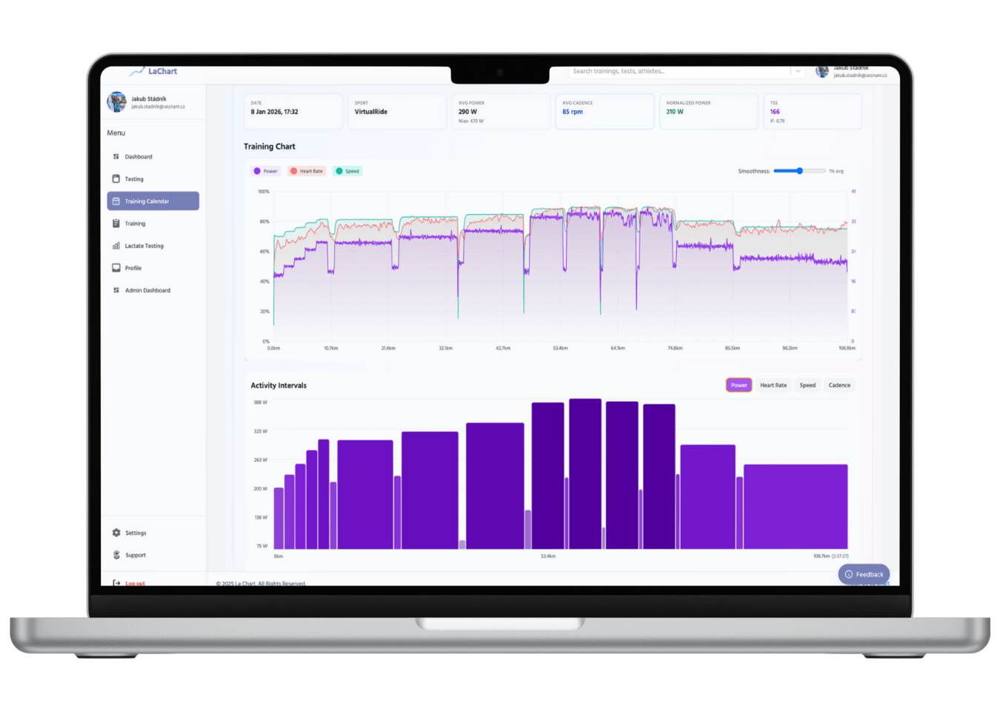
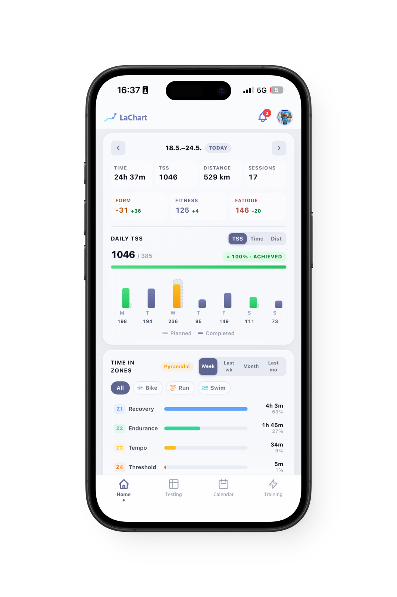
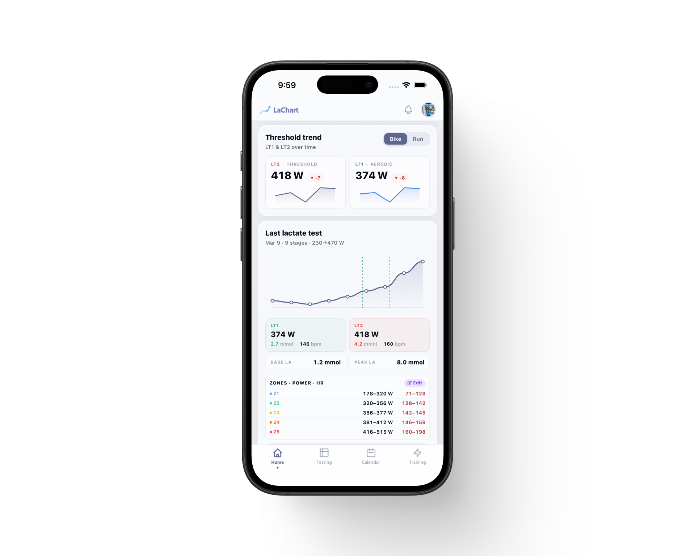
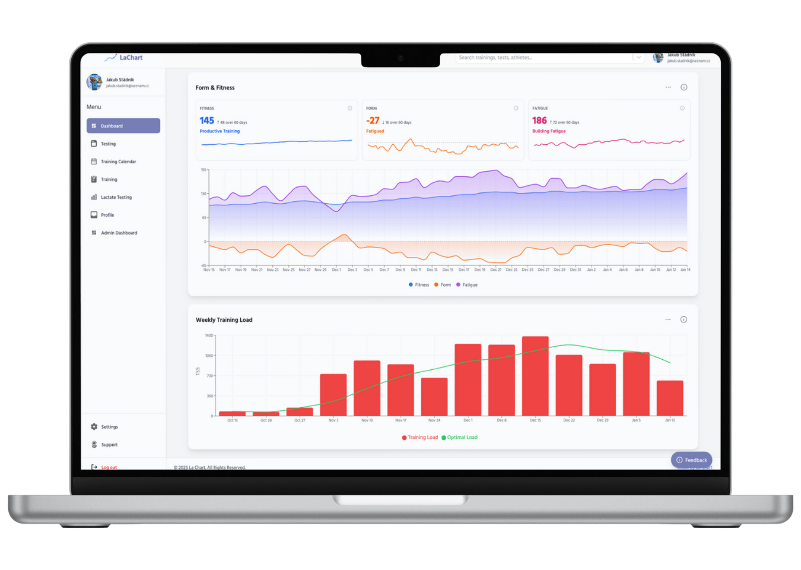
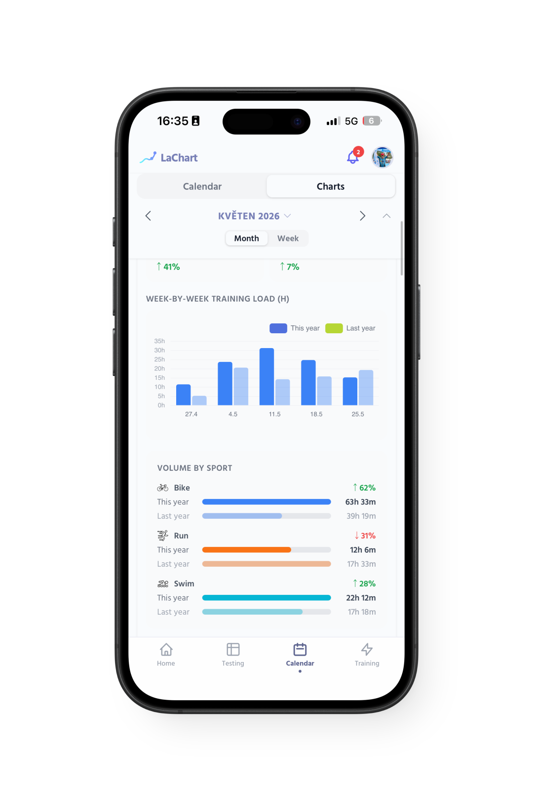
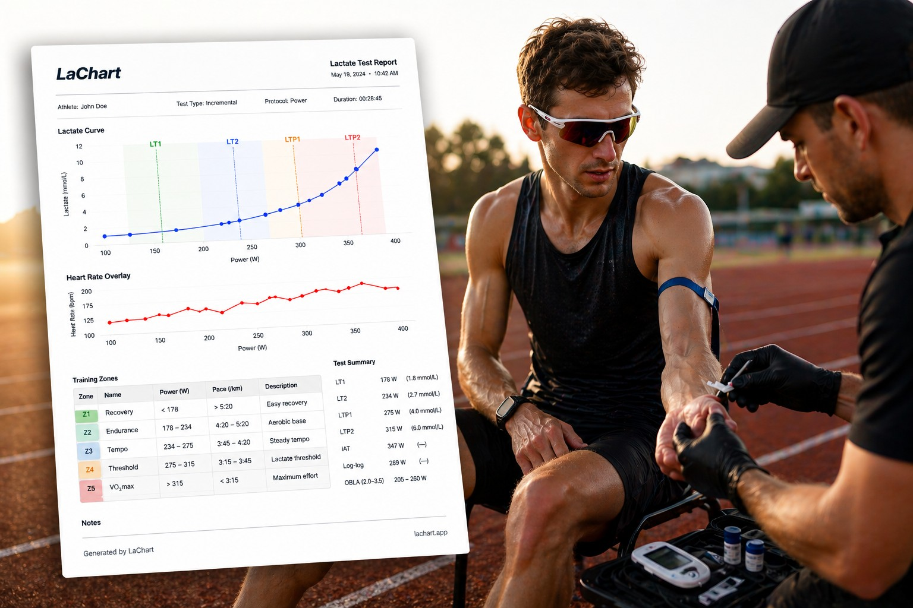

Your training, your data,
finally in one place.
Connect Garmin, Strava and Apple Health, plan and periodize your season, send intervals straight to your watch, and let LaChart predict where your lactate curve is heading — all built around the tests you already trust.
Everything you train with, in one place.
Connect Garmin, Strava and Apple Health once, and your rides, runs, sleep, resting heart rate and HRV flow into LaChart automatically — sitting right next to your lactate tests instead of in five different apps.

Your activities and recovery, tracked automatically
No more manual uploads. Connect your accounts and every session arrives with power, pace, heart rate and laps — plus the recovery signals that tell you whether you're ready to go again.
- Training — rides & runs with full streams and intervals
- Sleep — nightly duration and quality alongside your load
- Resting HR & HRV — your daily readiness at a glance
- One-time connect — Garmin, Strava and Apple Health

Link up with your coach — they see everything, and plan it
Connect your account to your coach and they get your tests, activities and load in real time. From there they build and schedule your training directly onto your calendar — no exports, no back-and-forth.
- Shared view — your coach sees each activity as it syncs
- Direct planning — sessions land straight on your calendar
- Multi-athlete — coaches manage a whole roster in one place
Built for how you actually work.
Whether you run a roster of athletes or train yourself, LaChart puts the plan, the data and your thresholds in one place. Here's what that looks like.
Build the plan, then send it to your watch.
Design structured workouts, lay out a periodized season, and push the exact intervals to your Garmin so what's on your calendar is what's on your wrist.

From a blank week to a periodized plan
Stack warm-up, work blocks, recoveries and cool-down with targets pulled from your lactate zones, then arrange your build, peak and taper across the season. The plan renders as a live power profile and totals your load before you commit.
- Structured intervals — 4×(3×2′ / 1′ off) in a few clicks
- Periodization — base, build, peak and taper on one page
- Zone-based targets — power, HR or pace from your test
- Save & reuse — build once, drop onto any week

Push interval workouts straight to your Garmin
One tap sends a planned session to your Garmin device as a structured workout. Every rep, target and recovery arrives intact, so you just follow the prompts on your wrist — no re-typing intervals on a tiny screen.
- Structured steps — the workout arrives exactly as planned
- Targets included — power, HR or pace per interval
- Ready on your ride — pick it from the workout list and go
Your data, turned into decisions.
LaChart doesn't just store your numbers — it reads them. Watch your lactate curve move between tests, track form and fatigue, and get plain-language guidance on what to do next.

See where your lactate curve is heading — before you re-test
From the training you've logged since your last test, LaChart predicts how your lactate curve and thresholds have shifted. Know whether your LT2 is climbing while there's still time to adjust — and re-test with a target in mind.
- Predicted vs. last test — the shift drawn on your curve
- Driven by your data — built from sessions since the test
- Re-test smarter — confirm the change when it matters

Track fitness, fatigue and form over the season
Every synced session feeds your fitness (CTL), fatigue (ATL) and form (TSB), so you can see the shape of your training block, time your peaks, and avoid digging a hole right before a race.
- Fitness & fatigue curves from your real load
- Form (TSB) — know when you're fresh or buried
- Peak on purpose — line up freshness with race day

Plain-language guidance on your next move
LaChart reads your tests, zones and recent load and turns them into clear, actionable pointers — where your training is trending, what's holding your threshold back, and what to focus on next.
- Actionable, not abstract — advice tied to your numbers
- Context-aware — reads tests, zones and recent load
- At a glance — the takeaway without the spreadsheet
Reports that carry your name, not ours.
Generate a clean, lab-grade lactate PDF in one click — and put your own studio, club or coaching brand on it.

A lactate PDF that looks like it came from your lab
Readable typography, a stage-by-stage table, and a curve with thresholds and zones drawn in — topped with your own logo and colors. Hand athletes a report that looks like your brand, not a generic export.
- Custom branding — your logo and colors in the header
- One-click generate — straight from any test
- Full detail — lactate, power and heart rate per stage
Connect your accounts and see it all come together.
Your tests and training are right where you left them. Link Garmin, Strava or Apple Health, and let LaChart turn your data into a plan.
Thanks for being part of LaChart. If you have feedback or want to request a feature, just reply to this email — we read every one personally.
Jakub & the LaChart team
Founder · lachart.net